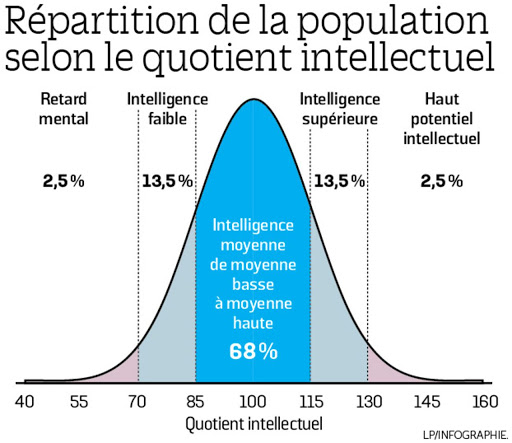

Qu'est-ce qu'un enfant Zèbre ?
Les Zèbres, un nom qui en dit long ! "C'est une appellation que j’ai choisi, il y a maintenant une quinzaine d’années pour cesser de stigmatiser les enfants surdoués et précoces" explique la psychologue Jeanne Siaud-Facchin. C’est une terminologie pour faire un pas de côté, en quelque sorte.
Quel que soit leur âge, les enfants précoces ont la routine en horreur. S’ils apprennent toujours de la même manière, ils peuvent vite décrocher. À l’école, cela peut donner des résultats inégaux et souvent moyens. Leur mode de raisonnement étant différent, ils ne comprennent pas forcément ce qu’on attend d’eux. La psychologue remarque aussi une écriture brouillonne, et une tendance à l'incohérence à l’écrit car “la vitesse de leurs pensées peut dépasser celle de leurs mains”.
“Ils ont tendance à ne pas saisir la consigne ou son intérêt et à répondre à côté”, précise la psychologue pour enfants. Ces petits zèbres fuient par dessus tout le manque de sens, comme le montre cette anecdote racontée par Florence Millot : “Je faisais un exercice avec un petit garçon, consistant à relier des bâtonnets entre eux pour former un cheval. Il a vite refusé de continuer car ‘un cheval, ça a des courbes’.”
